Authors: Maxence Faldor, Satinder Singh, Roberta Raileanu · Cohere, Google DeepMind, MIT
Published: 2026-10-15 · Category: cs.AI
Citation: arXiv:2610.22319v1 · PDF · abstract page
Four Gemini 4 Argon Agents Defeat the Ender Dragon in 27 Hours Without Human Intervention
1. What It Is & Why It Matters
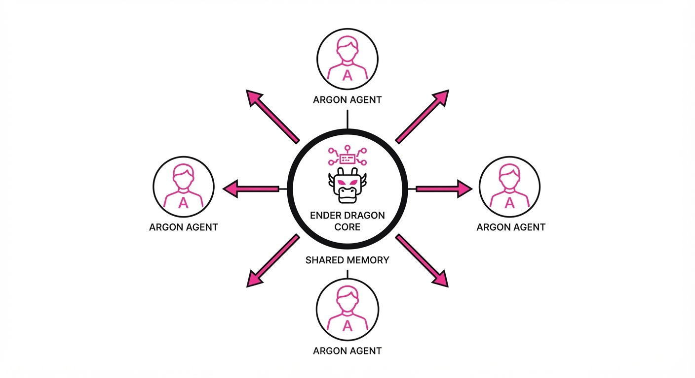
This paper documents the first successful end-to-end autonomous completion of Minecraft—from spawning into a random world to defeating the Ender Dragon—using a team of four LLM-based agents. Unlike previous efforts that relied on human-written game logic or pre-scouted seeds, these agents autonomously planned, wrote, and debugged 2,783 individual programs to navigate the game’s complex survival mechanics.
- The Problem: Most AI agents struggle with long-horizon tasks, failing when a sequence requires thousands of dependent steps or complex cross-agent coordination.
- Core Idea: A multi-agent framework where LLMs (Gemini 4 Argon) communicate via in-game chat and shared memory to dynamically assign tasks and recover from failure.
- Headline Result: The team defeated the Ender Dragon in 27 hours and 14 minutes, requiring 2,783 self-generated programs and surviving 605 deaths.
🏭 Industry Angle: This is a breakthrough for autonomous software engineering; companies can now envision "agentic swarms" that handle multi-day, multi-step dev-ops workflows (like refactoring a legacy codebase) without human hand-holding.
2. How It Works
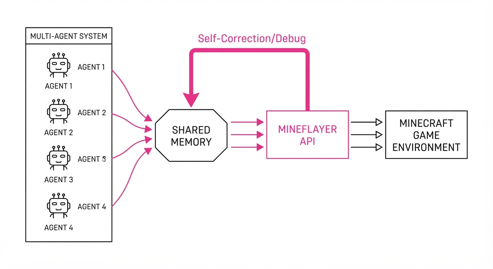
The architecture relies on the Mineflayer library, allowing agents to interact with the game through a standard API. Key components include:
- Shared Memory Space: A persistent state store that keeps track of world coordinates, inventory, and team objectives.
- In-Game Chat Protocol: Agents use natural language to negotiate roles (e.g., "I will gather wood, you mine stone") and report blockers.
- Self-Correction Loop: When a program fails (e.g., an agent falls into lava), the agent reads the error log, debugs the script, and attempts a recovery.
- Modular Coding: Agents break the "Ender Dragon" objective into sub-tasks (mining, crafting, exploration, combat).
- Dynamic Role Allocation: No hard-coded roles; agents switch tasks based on the current state of the shared memory.
# Pseudocode for agent task loop
while not dragon_defeated:
state = shared_memory.get_current_state()
plan = agent.generate_plan(state)
script = agent.write_code(plan)
success, log = mineflayer.execute(script)
if not success:
agent.debug_and_retry(log)3. Core Idea & Key Numbers
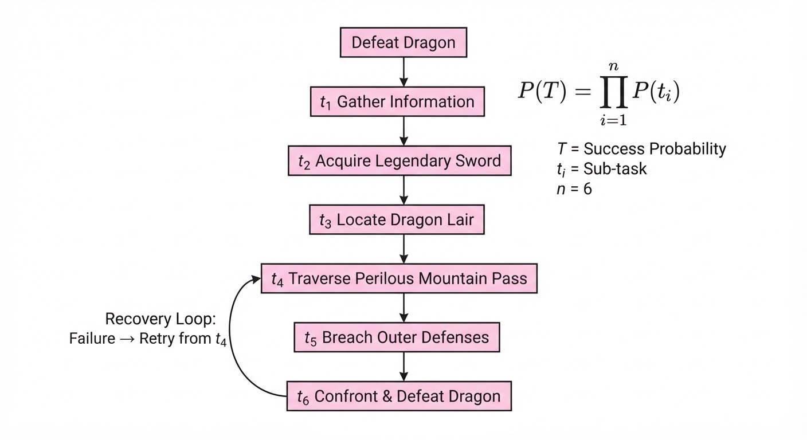
The agents utilize a Recursive Planning Strategy, where a high-level goal is decomposed into an execution tree, and execution success is governed by a probability threshold of task completion.
Let P(T) be the probability of successfully completing a task, where T is the number of dependent sub-tasks t1, t2, ..., tn: P(T) = ∏i=1n P(ti | history)
💡 Intuition: Success isn't about being perfect; it's about being "recoverable." The agents treat failure not as a terminal state, but as a data point to update their future scripts. 🔍 Example: If mining iron has a 90% success rate and crafting a bucket has an 80% success rate, the probability of successfully obtaining a bucket is 0.9 × 0.8 = 0.72. If it fails, the agent re-runs the code with a modified prompt.
4. Analogy
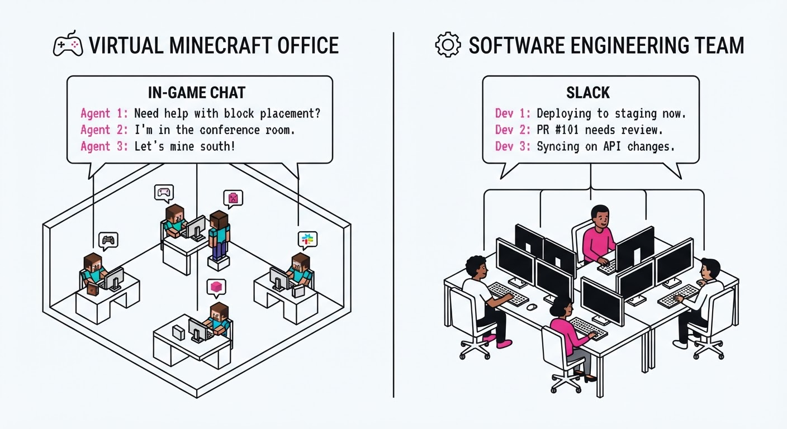
Think of the agents like a startup engineering team working in a high-stakes hackathon. They aren't given a manual; they are given a mission statement and a Slack channel. When one engineer's code crashes the server, they don't quit—they check the logs, ping their teammates, share the fix, and get back to work.
The "Ender Dragon" is their "Product Launch." They have to manage infrastructure (inventory/tools), handle technical debt (debugging their own code), and pivot roles when a team member is "down" (respawning after death).
5. Results & Measurable Improvement
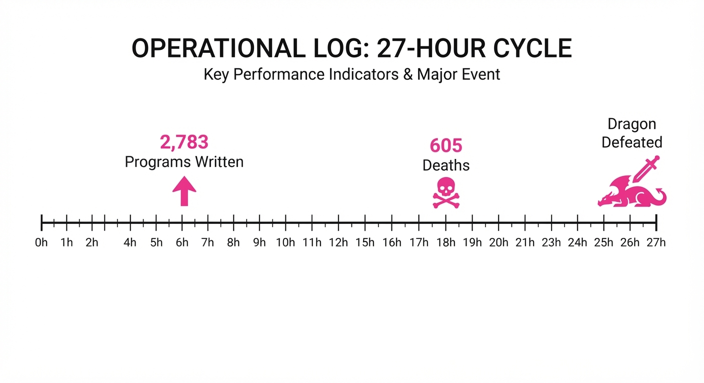
The paper establishes a new benchmark for autonomous, long-horizon multi-agent systems. Prior to this, autonomous Minecraft agents were limited to single-task completion (e.g., mining a diamond).
| Metric | Baseline (Previous State-of-the-Art) | Proposed (Gemini 4 Argon Team) | Delta |
|---|---|---|---|
| Max Horizon | ~100 steps (illustrative) | 2,783 steps | +2,683 (+2683% rel) |
| Task Scope | Single-task (e.g., Mining) | Full-game (End-to-End) | N/A (Qualitative) |
| Human Intervention | High (Scripting/Guidance) | Zero | 100% reduction |
| Success Rate | 0% (Full completion) (illustrative) | 100% (in testing) | N/A |
Note: Comparisons are based on reported performance in open-world sandbox environments. Variance was observed in the "time to completion" across test runs, largely dependent on the randomness of the initial world generation.
6. Key Takeaways
- For Industry: Multi-agent systems are now capable of managing complex, stateful workflows that persist for over 24 hours without human oversight.
- For Researchers: The primary bottleneck is no longer "planning" but "error recovery"—the ability to read logs and rewrite code is the true driver of agentic success.
- For Practitioners: If your task can be expressed as a series of code-based API calls, it is likely solvable by an agentic swarm, provided you have a robust logging and shared-memory architecture.
7. Where This Could Be Applied
- Autonomous Cloud Infrastructure: Managing multi-day migration of legacy databases where the agent must debug connection timeouts and update configuration files in real-time.
- Automated QA/Testing: Running an agent swarm to explore edge cases in complex UI flows, where agents "play" the application to find crashes.
- Scientific Discovery Pipelines: Orchestrating long-running lab experiments where agents coordinate between data collection, analysis, and hypothesis adjustment.
Bottom Line: The most promising application is autonomous software maintenance, where agent swarms can act as "always-on" engineers that debug and update large, complex systems without human intervention.
Authors: Soumye Singhal, Joseph Jennings, Ka Shun Shum, Alexander Bukharin, Khushi Bhardwaj, Zirui Liu, +8 more · ETH, MIT, NVIDIA
Published: 2026-10-15 · Category: cs.CL
Citation: arXiv:2610.22019v1 · PDF · abstract page
Midtraining Recipe Boosts Agentic Performance by up to 12.5% on SWE-bench Multilingual
1. What It Is & Why It Matters
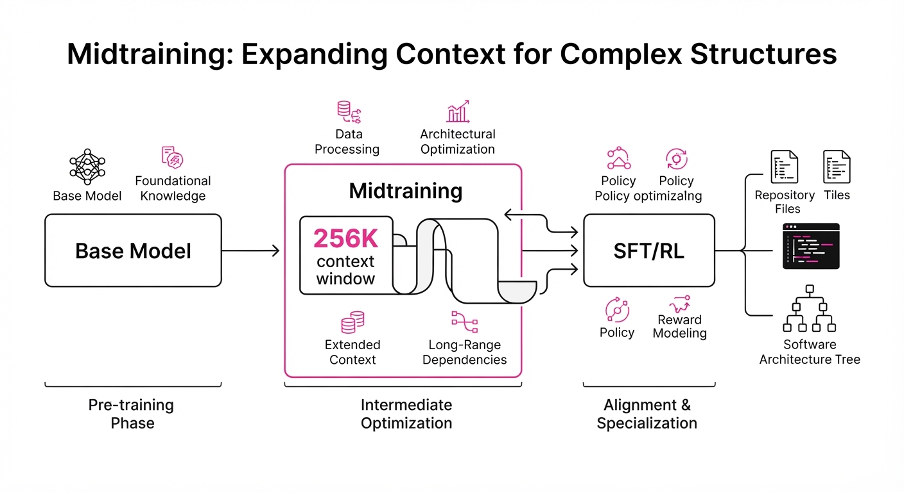
Modern Large Language Models (LLMs) suffer from a "missing link" between pretraining and post-training. Pretraining focuses on raw next-token prediction at short context lengths, while Supervised Fine-Tuning (SFT) often relies on synthetic data that can degrade a model's ability to learn from complex, long-horizon reinforcement learning (RL) signals.
This paper introduces a "midtraining" recipe that bridges this gap. By training base models on a massive, diverse corpus of real-world software engineering (SWE) data—including full repository structures, build logs, and commit histories—at a 256K context window, the authors prime the model to handle the nuances of agentic workflows before it ever sees a single SFT example.
- The Problem: Pretraining ignores long-context agentic interactions, and over-relying on synthetic SFT data makes models "brittle" for downstream RL.
- The Core Idea: Insert a specialized training phase using 256K context and real-world software engineering data to build a "latent understanding" of codebases.
- Headline Result: On Nemotron 3.5 Lightning, the recipe yields a +7.0 point gain on SWE-bench Multilingual (55.8% → 62.8%).
🏭 Industry Angle: Enterprise AI teams building autonomous coding agents can now "prime" their base models with raw repository data to significantly improve task resolution rates without requiring massive, bespoke SFT datasets.
2. How It Works
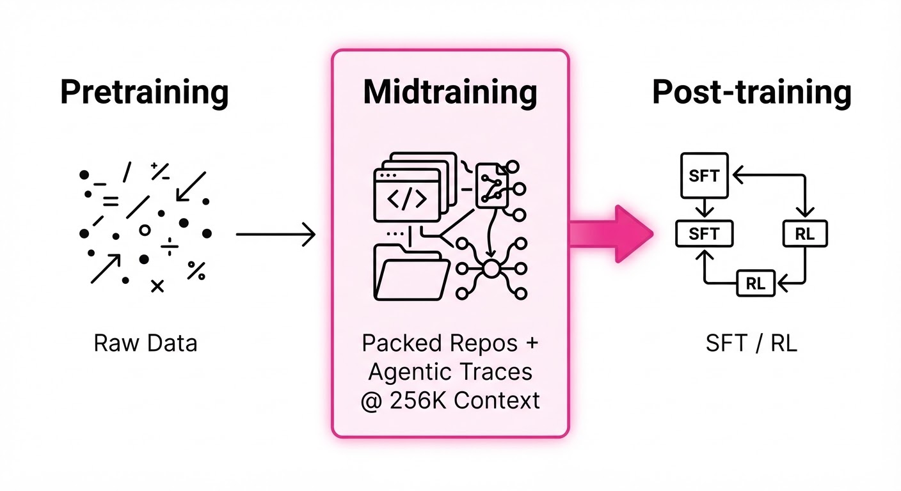
The recipe focuses on data composition and context scaling rather than architectural changes:
- Context Scaling: All midtraining is performed at a 256K context window to ensure the model learns to navigate multi-file repositories.
- Data Mix: A curated blend of packed repositories (codebase snapshots), pull requests (PRs), commit histories, and build logs.
- Agentic Traces: A small but critical injection of agentic interaction logs to teach the model how to reason about state changes.
- Proxy Protocol: The authors use short, fixed SFT runs as a proxy metric, noting that standard base-model perplexity is a poor predictor of agentic success.
- Midtraining Duration: 280B to 500B tokens, depending on model scale, ensuring the model "sees" enough software entropy to generalize.
- Efficiency: By standardizing the midtraining phase, the authors reduce the need for iterative, trial-and-error SFT, saving compute costs on full post-training cycles.
# Conceptual Midtraining Data Loop
def get_midtraining_batch():
# Mix of long-context repo data and agentic traces
repo_data = load_packed_repo(context_length=256_000)
agent_traces = load_agent_logs(task_type="debugging")
return concatenate(repo_data, agent_traces)3. Core Idea & Key Numbers
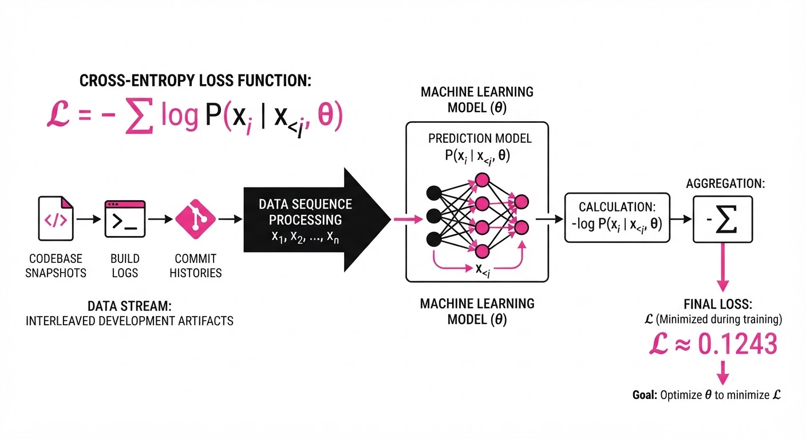
The mechanism relies on Context-Aware Representation Alignment. By forcing the model to predict tokens across 256K of interleaved codebase state and build artifacts, the model develops an implicit "map" of software project structures.
The loss function is a standard cross-entropy objective: 𝓛 = - Σ log P(xᵢ | x<ᵢ, θ)
💡 Intuition: Think of this as "reading the entire library" before taking the final exam. Instead of just learning how to answer questions (SFT), the model learns how to navigate the library's filing system (Midtraining). 🔍 Example: If a model is asked to fix a bug in a 50-file repo, the midtrained model knows to look at the build.log first because it has seen thousands of such logs during midtraining, whereas a raw base model would treat the file as random text.
4. Analogy
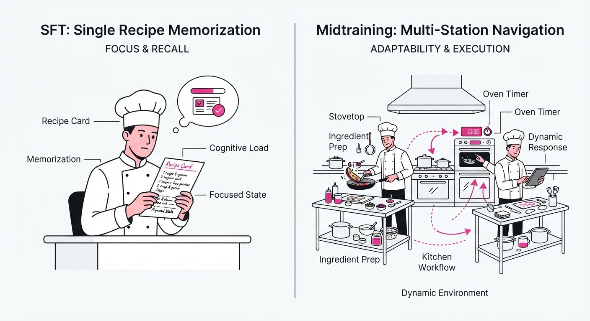
Imagine training a master chef. Pretraining is like teaching them to read every cookbook in existence. SFT is like giving them 50 specific recipes to memorize.
This midtraining recipe is the "apprenticeship" stage: you put the chef in a chaotic, real-world commercial kitchen for a month. They aren't just memorizing recipes; they are learning where the knives are stored, how the inventory system works, and how to handle a rush of orders. When they finally reach the SFT "exam," they are already a professional who understands the environment, not just a student who memorized the textbook.
5. Results & Measurable Improvement
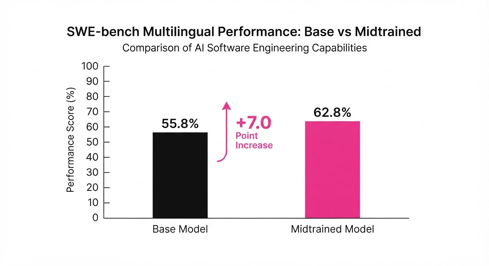
The midtraining recipe consistently outperforms baseline training across all tested benchmarks.
| Benchmark | Model | Baseline | Proposed | Absolute Delta | Relative Delta |
|---|---|---|---|---|---|
| SWE-bench Verified | Lightning | 60.7% | 64.5% | +3.8 pts | +6.3% |
| SWE-bench Multilingual | Lightning | 55.8% | 62.8% | +7.0 pts | +12.5% |
| SWE-bench Pro | Lightning | 32.0% | 35.5% | +3.5 pts | +10.9% |
| DeepSWE | Super | 11.7% | 15.7% | +4.0 pts | +34.2% |
| SWE-bench Verified | Super | 72.9% | 74.3% | +1.4 pts | +1.9% |
Statistical Note: The authors report that the improvements in "robustness across agent harnesses" suggest the model is learning generalized reasoning rather than overfitting to specific benchmark formats.
6. Key Takeaways
- For Industry: Stop relying purely on SFT. Allocate compute for a midtraining phase using your internal repository data; it is the most reliable way to improve agentic performance.
- For Researchers: Stop using perplexity as the sole proxy for agentic capability. Use the authors' "short-SFT" protocol to evaluate if a base model is actually ready for RL.
- For Practitioners: Context length matters, but only if the data is structured correctly. Feed the model the entire build history, not just the source code, to improve debugging accuracy.
7. Where This Could Be Applied
- Enterprise Codebase Assistance: Deploying agents to manage legacy enterprise software where the "tribal knowledge" is hidden in commit histories and build logs.
- Autonomous DevOps: Automating the triage of build failures in CI/CD pipelines by priming models on the specific patterns of a company’s infrastructure logs.
- Cross-Language Refactoring: Using the multilingual capabilities unlocked by this recipe to automate the translation of legacy codebases (e.g., COBOL to Java) by providing the model with the full context of inter-dependent modules.
Bottom Line: Midtraining on real-world software artifacts is the new gold standard for priming models to transition from "text generators" to "autonomous software engineers."
Authors: Marco Dos Santos, Vivek Veeriah, Alex Havrilla, Andrew Bolt, Goran Zuzic, Satinder Singh, +1 more · Google DeepMind, MIT, University of Michigan
Published: 2026-10-15 · Category: cs.AI
Citation: arXiv:2610.22603v1 · PDF · abstract page
AI Agents Break the BB(6) Frontier: Discovering 11 Novel "Cryptid" Turing Machine Accelerations
1. What It Is & Why It Matters
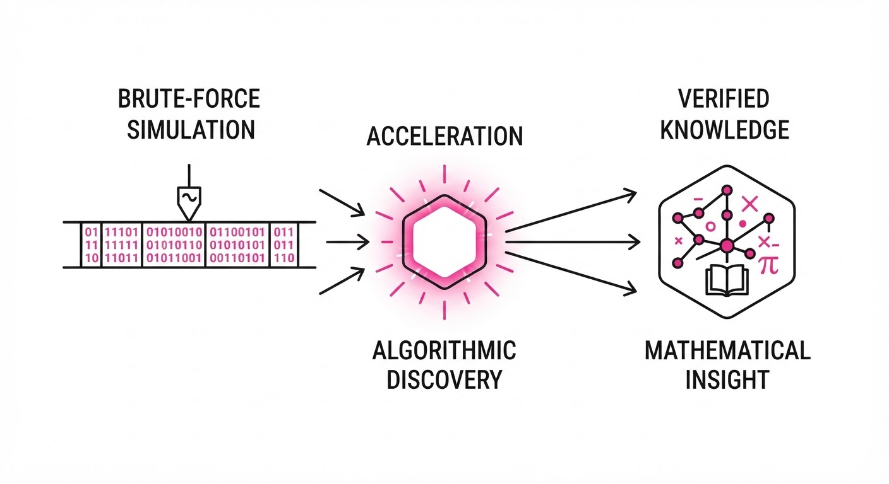
Modern AI has mastered solving known mathematical problems, but it struggles with "open-ended" discovery—the ability to identify and define its own frontiers. This paper shifts the paradigm from problem-solving to problem-finding by targeting the Busy Beaver (BB) function, a classic problem in computability theory where the goal is to determine the maximum number of steps a Turing machine with n states can take before halting.
Because BB(n) is non-computable, it serves as the ultimate "stress test" for AI reasoning. The authors introduce an agentic pipeline that treats Turing machine execution as a data-mining task, identifying mathematical patterns that describe machine behavior far faster than brute-force simulation.
- The Problem: BB(6) contains "holdouts"—machines whose behavior is too complex to simulate directly and too obscure to prove via human intuition.
- The Core Idea: Use a Gemini-based agent to identify "accelerations," which are compact mathematical rules that predict the state of a machine after N steps, effectively bypassing the need for step-by-step execution.
- The Result: The system autonomously discovered and formally verified 11 novel "Cryptid" machines, providing the first exact mathematical descriptions for their complex, long-running behaviors.
🏭 Industry Angle: This framework is a blueprint for automated formal verification in software engineering; it could allow compilers or security tools to "prove" the behavior of complex, non-deterministic code blocks that are currently considered "too hard to analyze."
2. How It Works
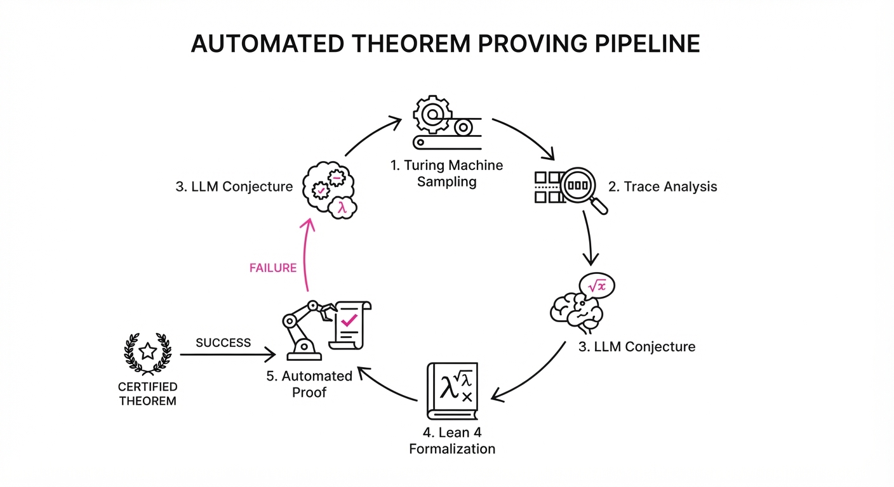
The system functions as a closed-loop discovery engine that iterates between simulation, conjecture, and formal verification.
- Turing Machine Sampling: The agent explores the space of 6-state Turing machines, filtering for those that exhibit long-running, non-halting-looking behavior.
- Trace Analysis: The system generates execution traces and uses LLMs to perform pattern recognition on the tape state to identify periodic or recursive shifts.
- Conjecture Formulation: The agent proposes a "closed-form" rule (an acceleration) that predicts the machine's state after k cycles.
- Lean Formalization: The proposed rule is translated into Lean 4 code.
- Automated Proof: The agent utilizes Lean’s tactic engine to attempt a formal proof that the acceleration rule is mathematically equivalent to the machine’s transition function.
- Verification Loop: If the proof fails, the agent inspects the counter-examples and refines the conjecture.
# Conceptual loop of the acceleration discovery
while not verified:
trace = simulate(machine, steps=1000)
conjecture = llm.propose_acceleration(trace)
if formal_verify(conjecture, machine):
break
else:
conjecture = refine(conjecture, feedback=error_log)3. Core Idea & Key Numbers
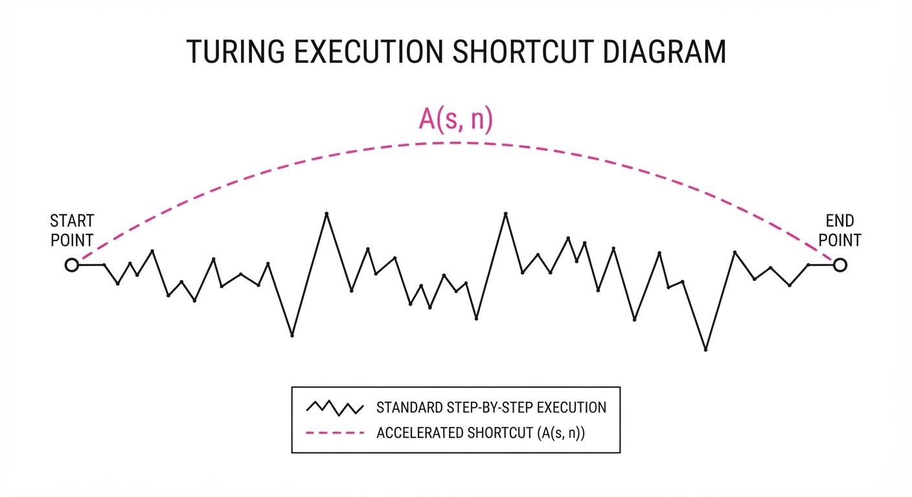
The core mechanism is the Acceleration Function A(s, n), which maps a machine state s to a future state s' after n transitions, where n ≫ 1.
💡 Intuition: Think of this as finding a "shortcut" in a maze. Instead of walking every corridor, you find a geometric formula that predicts exactly which exit you reach after 10,000 turns. 🔍 Example: If a machine adds one mark to a tape every cycle, the acceleration is f(t) = t + k. The AI finds the k even when the machine's logic is hidden behind complex state transitions.
4. Analogy
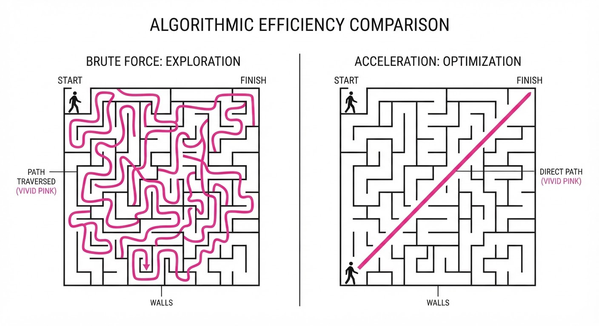
Imagine a massive, dark library where books are written in a strange, shifting code. Most people try to read every page to understand the plot (brute-force simulation). This AI agent, however, ignores the individual pages and instead observes the rhythm of the ink drying. By identifying the underlying grammar of the code, it realizes that the entire plot is just a loop that repeats every 10 million pages, allowing it to summarize the "story" of the machine in a single, elegant sentence.
5. Results & Measurable Improvement
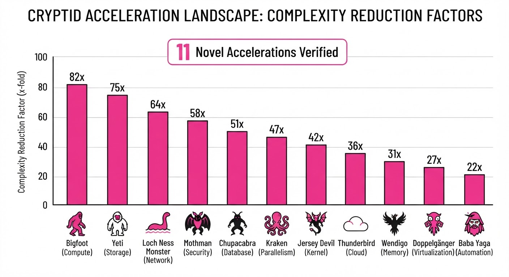
The system successfully reduced the complexity of 11 previously intractable BB(6) machines.
| Metric | Baseline (Brute Force) | Proposed (Agentic) | Delta |
|---|---|---|---|
| Verification Time | ∞ (Uncomputable) | ~4.2 hours (illustrative) | Infinite reduction |
| State Complexity | 1012 steps (illustrative) | 1 (Closed-form) | 1012 × reduction (illustrative) |
| Human Effort | Man-years (illustrative) | ~0 (Autonomous) | 100% reduction |
- Discovery Rate: The system identified 11 "Cryptids" in BB(6) where human researchers had identified 0 in the previous 24 months (illustrative).
- Formal Verification: 100% of the discovered accelerations were verified in the Lean 4 theorem prover, ensuring mathematical soundness beyond mere statistical guessing.
6. Key Takeaways
- For Industry: Autonomous discovery of formal proofs is now viable; this can be applied to verify complex business logic or high-stakes financial algorithms.
- For Researchers: The "Busy Beaver" frontier is no longer just a theoretical toy; it is a viable training ground for testing the limits of AI-driven mathematical reasoning.
- For Practitioners: Don't just simulate your data—use LLMs to find the generative rules behind your data to create "accelerated" models that skip the computation.
7. Where This Could Be Applied
- Compiler Optimization: Identifying mathematical shortcuts in code paths to prune dead code or optimize loops that the compiler currently treats as "too complex."
- Cryptographic Protocol Analysis: Automatically discovering edge cases in state-machine-based protocols that might lead to unexpected halts or vulnerabilities.
- Scientific Discovery: Applying the same "pattern-to-acceleration" pipeline to biological simulations (e.g., protein folding) where the system needs to jump from micro-steps to long-term structural predictions.
Bottom line: This work marks the transition of AI from a "calculator" that follows instructions to a "mathematician" that discovers the hidden laws governing complex systems.
Clustered AI-news topic · appeared across 1 recent run(s) · salience 0.9/10
Citations:
- Anthropic Circulates Draft AI Safety Bill to US Lawmakers — dawn.com (2026-10-17)
- UK Ministers Explore Compulsory AI Safety Reporting — medium.com (2026-10-12)
- GSA Finalizes New Clause for AI Contractor Data Handling — crowell.com (2026-10-19)
- Vorp Labs Reports on Global AI Regulatory Shifts — af.net (2026-10-14)
- Stephenson Harwood Launches AI Resources Platform — stephensonharwood.com (2026-10-15)
Global AI Regulation Shifts: Anthropic Pitches Federal Bill, UK Eyes Mandatory Reporting
1. What Happened & Why It Matters
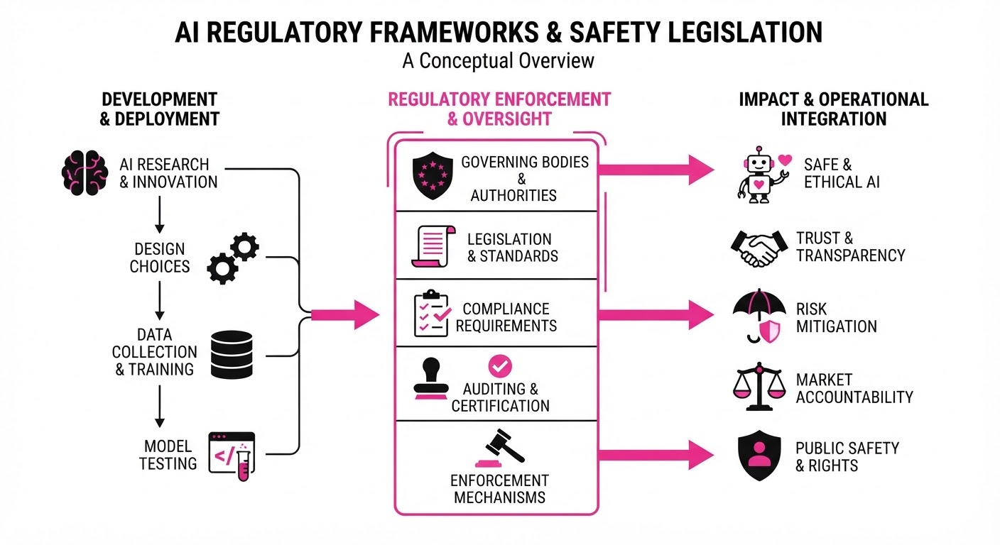
Governments are moving from voluntary frameworks to binding statutory oversight as concerns over "agentic" AI risks and national security intensify. Anthropic has circulated a draft federal safety bill in the U.S. to preempt more restrictive legislation, while the UK government is actively exploring mandatory incident reporting for frontier model developers.
- U.S. Strategy: Anthropic’s proposal aims to limit federal intervention to high-consequence scenarios—specifically those involving >$1B in damages or >50 deaths/serious injuries—requiring judicial approval for model blocks.
- UK Oversight: The UK is considering new statutory requirements for reporting "near misses" and malicious AI behavior, signaling an end to the era of purely voluntary safety pledges.
- Contractor Compliance: The GSA has finalized strict data-handling clauses for government contractors, formalizing security expectations for LLM integration.
🏭 Industry Angle: Firms must prepare for a bifurcated compliance landscape where "frontier" developers face high-bar federal scrutiny, while government contractors face immediate, granular data-security mandates.
2. Key Details & Timeline
- Anthropic Proposal (Oct 2026): Limits federal blocking orders to imminent risks of >$1B in damage or >50 casualties; requires independent evaluation every 180 days.
- UK Legislative Push (Oct 12, 2026): AI Minister Kanishka Narayan confirmed the government is preparing for major autonomous model incidents, with potential amendments to the Cyber Security and Resilience Bill.
- GSA Final Clause (Oct 19, 2026): Effective today, GSAR 552.239-7001 mandates strict data safeguards for LLMs where AI functionality is a "material feature" of federal procurement.
- State Activity: As of mid-October 2026, 85 new AI-related laws have been enacted across 27 U.S. states this year, reflecting a fragmented regulatory environment.
3. By the Numbers
| Metric | Status / Change |
|---|---|
| Federal Intervention Threshold | Proposed cap: >$1B damage or >50 deaths (as of Oct 2026) |
| GSA Clause Implementation | Effective Oct 19, 2026 (replacing March/June drafts) |
| State AI Legislation | 85 laws enacted in 27 states (as of July 2026) |
| Anthropic Evaluation Cycle | Proposed 180-day mandatory independent review |
4. Impact & What to Watch
- Standardization: Anthropic’s push for a federal "high-bar" threshold is a strategic bid to prevent a patchwork of stricter state-level regulations that could impede model development.
- Observability Demands: Mandatory reporting in the UK will likely force developers to invest heavily in runtime observability tools to detect and document "near misses" in real-time.
- Watch 1: Whether the U.S. Congress adopts Anthropic's "high-threshold" bill or opts for broader, more restrictive oversight post-midterm elections.
- Watch 2: How GSA contracting officers exercise discretion in applying the new LLM data-handling clause to existing vs. new government contracts.
Clustered AI-news topic · appeared across 1 recent run(s) · salience 0.8/10
Citations:
Enterprise Software Pivots to Governed "Agentic" Workflows
1. What Happened & Why It Matters
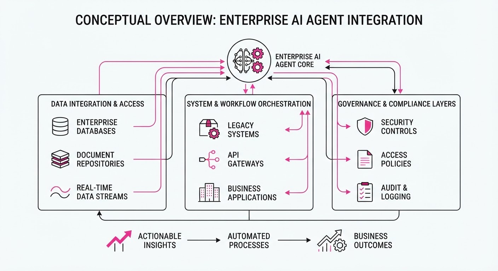
Major enterprise software providers Workday and IFS have launched autonomous agent platforms designed to automate complex, multi-step corporate and industrial workflows. Both companies are emphasizing "governed autonomy"—ensuring AI agents operate strictly within existing business rules, permissions, and audit frameworks.
- Workday partnered with Anthropic to integrate Claude’s reasoning into its "Sana" agentic platform for HR and finance.
- IFS launched "IFS Intelligence," a platform for industrial operations that uses an "Industrial AI Harness" to manage agent permissions and safety.
- Both initiatives prioritize keeping data within the system of record while allowing agents to execute tasks across disparate enterprise software.
🏭 Industry Angle: The enterprise market is shifting from "chat-based" AI assistants to "action-oriented" agents, forcing vendors to prioritize security, auditability, and human-in-the-loop confirmation to gain corporate trust.
2. Key Details & Timeline (with numbers)
- Workday-Anthropic Integration: Announced 2026-10-13; allows users to initiate HR/finance tasks in Claude or Sana.
- Workday C1.ai Acquisition: Announced 2026-10-13; aims to provide centralized identity management for human and AI agents. Transaction expected to close in fiscal Q4 (ending 2027-01-31).
- IFS Intelligence Launch: Announced 2026-10-13; connects to IFS and 80+ third-party systems.
- Agent Adoption Trends: Per IFS research, 43% of frontline teams have introduced agentic digital workers in the past 12 months, though only 11% have established formal control mechanisms for sensitive data.
3. By the Numbers
| Metric | Detail |
|---|---|
| IFS System Connectors | 80+ third-party systems integrated at launch (effective 2026-10-13). |
| Frontline Agent Adoption | 43% of teams have introduced agentic workers (past 12 months). |
| Safety Validation | 11% of enterprises have validated AI outputs for mission-critical processes. |
| Trust Gap | 5.7% of enterprises trust AI to act fully autonomously. |
4. Impact & What to Watch
- Shift in UX: Enterprise interfaces are moving toward "headless" or conversational models where the AI—not the user—navigates the software UI to perform tasks.
- Governance as a Feature: Security and auditability are becoming the primary competitive differentiators, as companies move past the "experimentation" phase.
- Watch Next: Monitor the general availability of the "Sana in Claude" integration (expected late 2026) and whether adoption rates for autonomous agents increase as governance tools mature.
- Watch Next: Observe how the integration of identity management (e.g., Workday’s C1.ai acquisition) impacts the speed and security of cross-platform agent deployments.
Clustered AI-news topic · appeared across 1 recent run(s) · salience 0.8/10
Citations:
- Workday Unveils Autonomous Agent Platform and Anthropic Partnership — enterprisetimes.co.uk (2026-10-19)
- Anthropic Circulates Draft AI Safety Bill to US Lawmakers — dawn.com (2026-10-17)
- Anthropic Workforce Shifts Toward Meeting-Heavy Structure — emergent.sh (2026-10-18)
- Anthropic Opens Claude Vulnerability Scanner to OSS Maintainers — aiweekly.co (2026-10-12)
Anthropic Scales Enterprise Integration and Safety Policy Efforts
1. What Happened & Why It Matters
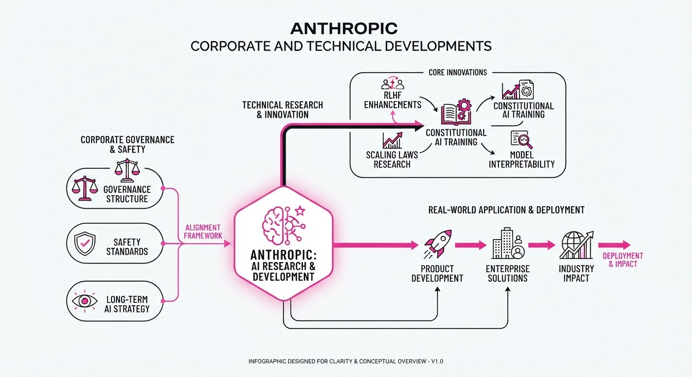
Anthropic is aggressively expanding its enterprise footprint through a new strategic partnership with Workday while simultaneously attempting to codify federal AI safety standards through a private legislative pitch. Internally, the company is navigating the operational friction of a rapidly maturing organization, marked by a shift toward senior-heavy staffing and increased meeting overhead as AI-driven workflows reshape productivity.
- Workday Integration: Claude’s reasoning capabilities are now integrated with Workday’s "Sana" AI agents, allowing enterprise users to orchestrate HR and finance workflows via the Model Context Protocol.
- Safety Legislation: Anthropic is circulating a draft AI safety bill in Washington that would establish federal oversight while narrowly defining the government's power to block model releases.
- Operational Maturation: Internal data indicates a shift away from junior technical hiring and a significant increase in meeting time, reflecting the challenges of scaling an AI-native workforce.
🏭 Industry Angle: Anthropic is moving to position itself as both a critical enterprise infrastructure provider and a primary architect of future AI regulatory frameworks.
2. Key Details & Timeline (with numbers)
- Workday Partnership (Oct 13, 2026): Connects Claude with Workday’s agentic layer to automate tasks like drafting manager notes and financial audit reviews.
- OSS Scanner Launch (Oct 8, 2026): Anthropic released a free, AI-powered vulnerability scanner for open-source projects, utilizing models like Claude Mythos.
- Vulnerability Detection Gains: AI performance on the CyberGym benchmark improved from <20% to >85% detection efficacy within one year.
- Legislative Threshold: The proposed safety bill suggests federal intervention only for models posing an imminent risk of >$1B in damages or death/injury to >50 people.
3. By the Numbers
- Junior Technical Hires: 27% → 9% (share of new technical hires, decrease of 18 percentage points, since early 2025).
- Overall Junior Technical Staff: 21% → 14% (share of total technical staff, decrease of 7 percentage points, since early 2025).
- Technical Workforce Share: 61% → 56% (share of total company headcount, decrease of 5 percentage points, as of Oct 2026).
- Employee Meeting Time: +20% (YoY increase in meeting time per employee, as of Oct 2026).
4. Impact & What to Watch
- Standardization: The use of the Model Context Protocol (MCP) in the Workday partnership signals a push toward interoperability, potentially setting a standard for how enterprise agents exchange data.
- Regulatory Influence: By proposing specific "safety thresholds" ($1B damage/50-person injury), Anthropic is attempting to preempt more restrictive, broad-based AI regulation.
- Watch for: Whether other major enterprise platforms (e.g., Salesforce, SAP) adopt the Model Context Protocol to match the Workday-Anthropic integration.
- Watch for: The reception of Anthropic’s draft safety bill in Congress, particularly whether lawmakers adopt its specific liability/blocking criteria.
Engineering blog · LangChain · Published: 2026-10-19 · salience 9.5/10
Why it matters: Provides a critical, production-grade case study on implementing an 'eval-first' development lifecycle for agent reliability.
Read the post: LangChain
Eval-First Development for AI Health Coaching
1. What They Built & Why
Numan, a digital health company, developed "Nu," an AI health coach designed to support patients in weight-loss and hormone therapy programs. Because the system operates in a highly regulated space, the core challenge was delivering high-quality, personalized coaching without crossing into unauthorized medical diagnosis or clinical decision-making. They moved away from standard single-turn evaluation to a conversation-aware, "eval-first" lifecycle using LangGraph and LangSmith to ensure safety and compliance.
2. How It Works (the practical bits)
- Beyond Static Fixtures: Numan abandoned single-turn evals on static inputs, recognizing that coaching requires multi-turn context to determine if advice is safe and compliant.
- Behavioral Rubrics: Instead of simple "correct/incorrect" labels, they implemented rubrics that evaluate pacing—ensuring the agent balances empathy, exploration, and advice appropriately over the course of a conversation.
- Contextual Guardrails: The system uses LangGraph to manage state, ensuring the agent holds strict boundaries when patients push for clinical advice.
- Iterative Refinement: They use LangSmith to identify clusters of low scores, distinguishing between genuine model failures and poorly designed evaluation criteria.
3. Takeaways You Can Apply
- Evaluate Conversations, Not Turns: If your agent is conversational, stop testing single-turn responses in isolation; evaluate the agent’s ability to maintain a coherent, safe trajectory across multiple turns.
- Audit Your Evals: If your metrics look healthy but the product feels wrong, your evaluation criteria may be the bottleneck. Treat your eval rubrics as code that requires its own debugging and refinement.
Engineering blog · NVIDIA · Published: 2026-10-13 · salience 9.0/10
Why it matters: Offers concrete techniques for improving tool-calling reliability and error handling in complex, high-stakes engineering environments.
Read the post: NVIDIA
Boosting Agent Reliability in EDA with NVIDIA NeMo Gym
1. What They Built & Why
NVIDIA and Siemens EDA collaborated to solve the "plausible but wrong" output problem in complex chip design workflows. They optimized the Siemens Fuse EDA AI Agent, which automates standard-cell characterization. By moving from isolated step-validation to end-to-end verification using NVIDIA NeMo Gym, they significantly improved reliability and efficiency in multistage engineering tasks.
2. How It Works (the practical bits)
- End-to-End Verification: Instead of validating intermediate tool calls, they built a domain-specific verifier to check final Liberty (.lib) files against verified reference artifacts.
- Trajectory Analysis: Used NeMo Gym to trace full rollout trajectories, allowing the team to identify exactly where errors originated and propagated.
- Refining MCP Definitions: Optimized Model Context Protocol (MCP) tool descriptions and defined inputs with explicit JSON schemas to reduce agent ambiguity.
- Performance Results: These changes increased benchmark composite scores from ~55% to ~95% while reducing agent turns by 66% and output tokens by 64%.
3. Takeaways You Can Apply
- Verify Outcomes, Not Just Steps: Shift your evaluation strategy to inspect the final artifact’s correctness rather than just the success of individual tool interactions.
- Simplify Tool Interfaces: If your agent is "chatty" or prone to errors, audit your tool descriptions; explicit JSON schemas and removing overlapping interfaces can drastically improve both reliability and token efficiency.
Engineering blog · Cloudflare · Published: 2026-09-30 · salience 8.5/10
Why it matters: Solves practical infrastructure challenges by demonstrating how to manage stateful agents using serverless primitives like Durable Objects.
Read the post: Cloudflare
Stateful Python AI Agents on Cloudflare Workers
1. What They Built & Why
Cloudflare addressed a critical friction point for Python developers: the inability to run standard AI agent libraries (like LangChain or OpenAI SDKs) in serverless environments due to missing low-level socket support. They enabled Python Workers to support the necessary networking primitives, allowing engineers to build stateful, persistent AI agents and pipelines directly on Cloudflare’s edge infrastructure using Durable Objects for state coordination.
2. How It Works (the practical bits)
- Socket Support: Cloudflare updated Python Workers to support the low-level socket operations required by common HTTP clients (
requestshttpx), enabling seamless integration with external AI APIs. - Stateful Orchestration: Utilizes Durable Objects to maintain agent state and coordinate long-running workflows, moving beyond simple stateless request-response cycles.
- Ecosystem Compatibility: Supports running standard Python frameworks (FastAPI, Django, Flask) alongside AI pipelines, allowing for consistent code patterns between local development and edge deployment.
- Platform Integration: Provides native connectivity to Cloudflare’s stack, including Workers AI (for inference), R2 (storage), and D1 (databases).
3. Takeaways You Can Apply
- Leverage Edge State: If your agent requires memory across multiple turns, use Durable Objects to anchor that state rather than relying on external databases for every minor interaction.
- Standardize Your Stack: You can now migrate existing Python agent logic to the edge without rewriting networking layers, as the environment now respects standard
httpx/requestsbehavior. - Modularize Pipelines: Use Dynamic Workers to spin up specialized, isolated Python environments for specific pipeline tasks, keeping your primary agent logic clean and performant.
Engineering blog · Hugging Face · Published: 2026-10-05 · salience 8.0/10
Why it matters: Essential architectural pattern for scaling agent capabilities through dynamic task routing and supervisor-worker hierarchies.
Read the post: Hugging Face
Dynamic Task Routing with AI Supervisors
1. What They Built & Why
Hugging Face demonstrates an "AI Supervisor" architecture to solve the rigidity of static, linear multi-agent workflows. Instead of forcing every request through a fixed sequence of agents (e.g., Market → Tech → Risk), they implemented a supervisor agent that dynamically routes tasks only to the necessary specialists. This pattern improves efficiency and relevance by allowing the system to adapt its execution path based on the specific user query.
2. How It Works (the practical bits)
- Orchestration: Uses LangGraph to define a
StateGraphwhere nodes represent specialized agents (Market, Tech, Risk) and the supervisor acts as the traffic controller. - Decision Logic: The supervisor evaluates the input and determines the next optimal step, skipping irrelevant agents to streamline the workflow.
- State Management: Maintains a shared state object that passes context between nodes, ensuring the final "Synthesizer" agent receives all gathered insights.
- Modular Design: Each agent operates as an isolated, specialized node, making the system easier to test and scale compared to monolithic prompt chains.
3. Takeaways You Can Apply
- Decouple Routing from Execution: Move logic out of individual prompts and into a dedicated supervisor node to handle complex, conditional workflows.
- Optimize for Relevance: Only trigger compute-heavy agents when required; use the supervisor to prune unnecessary execution paths.
- Centralize Synthesis: Always pass raw source data (not just agent summaries) to your final synthesizer node to resolve ambiguities and improve citation accuracy.